În stînga este slide-ul din curs, în dreapta aceeași figură, calculată în browser din aceleași date. Butonul ▶ modifică parametrul pas cu pas.
Faptele stilizate ale randamentelor financiare · Media condiționată și varianța condiționată · Modelul ARCH · Modelul GARCH(1,1) · Estimarea prin verosimilitate maximă · GARCH pe patru piețe și modele ARMA-GARCH · Asimetria și efectul de levier · Diagnosticare și alegerea modelului · Prognoza varianței și evaluarea ei · O aplicație: VaR 1% dintr-un model GARCH
Faptele stilizate ale randamentelor financiare
Randamentele logaritmice zilnice pe patru piețe
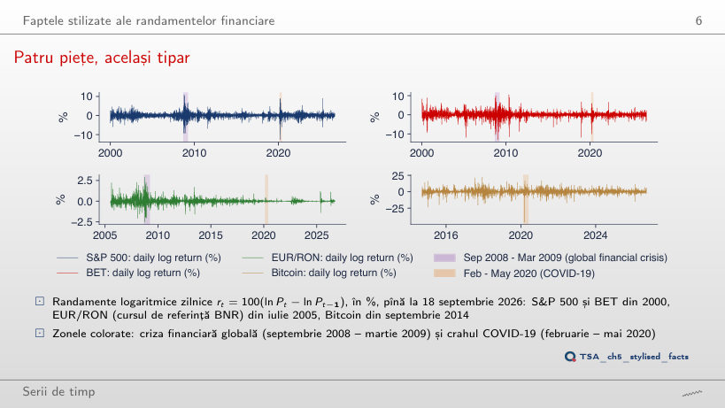
Răspuns
În 2017: 0,42%, urmat de 2006 (0,63%) și 2005 (0,65%). Între septembrie 2008 și martie 2009 abaterea standard a fost 3,52%, de 8,3 ori mai mare, iar în februarie–mai 2020, 3,70% (de 8,8 ori). La EUR/RON cel mai calm an a fost 2024 (0,025%), cel mai agitat 2008 (0,72%): BNR a ținut leul aproape fix în 2020, cînd acțiunile treceau prin cea mai mare furtună.
Autocorelația randamentelor și a pătratelor lor
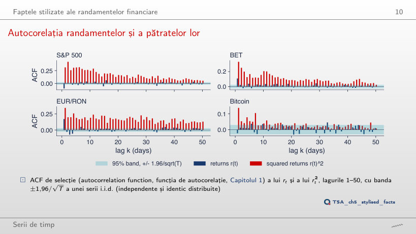
Răspuns
Toate 50 ies din bandă, iar la lagul 50 autocorelația este 0,127, față de 0,053 pentru r²; la lagul 1: 0,289 față de 0,313. Valoarea absolută este mai puțin dominată de cîteva zile extreme decît pătratul, deci memoria mărimii randamentelor apare și mai clar. Semnul (r) rămîne aproape imprevizibil: 15 autocorelații din 50 ies din bandă, cele mai multe mici.
Media condiționată și varianța condiționată
Modelul pentru medie lasă efecte ARCH
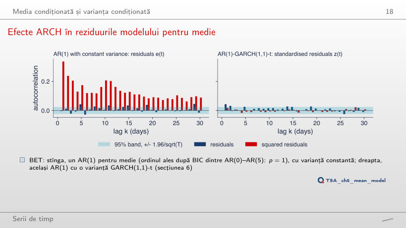
Răspuns
Nu. Q(10) al reziduurilor scade de la 29,7 la 15,4 (p = 0,009), dar Q(10) al pătratelor crește de la 2496 la 2562, iar ARCH-LM(5) rămîne în jur de 1020 (pentru AR(1): n R² = 6664 × 0,1526 = 1017). Un model mai bogat pentru medie elimină autocorelația nivelului, nu pe cea a pătratelor: varianța condiționată cere un model separat. În dreapta, aceleași reziduuri împărțite la volatilitatea GARCH(1,1) nu mai au efecte ARCH pentru niciun p: Q(10) al lui ẑ² rămîne între 7,0 și 8,3 (p > 0,6).
Modelul ARCH
Traiectorii simulate: i.i.d., ARCH(1) și GARCH(1,1)
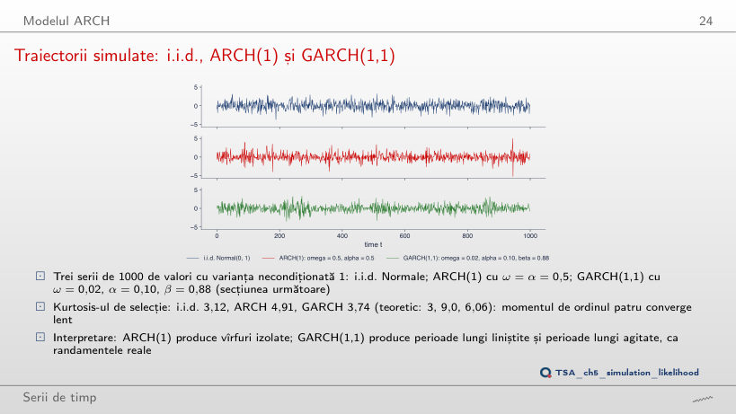
Răspuns
Teoretic, momentul de ordinul patru nu există (3α² = 1,47 ≥ 1, pragul este α = 1/√3 = 0,577), deci kurtosisul este infinit. Kurtosisul celor 1000 de valori simulate este 11,24, iar la α = 0,9 este 34,9: o selecție finită are mereu un kurtosis finit, deci valoarea de selecție nu poate arăta că momentul nu există. La α = 0,5 teoria dă 9,0, selecția 4,91: momentul de ordinul patru converge încet.
Modelul GARCH(1,1)
GARCH, EWMA și o fereastră mobilă în 2020
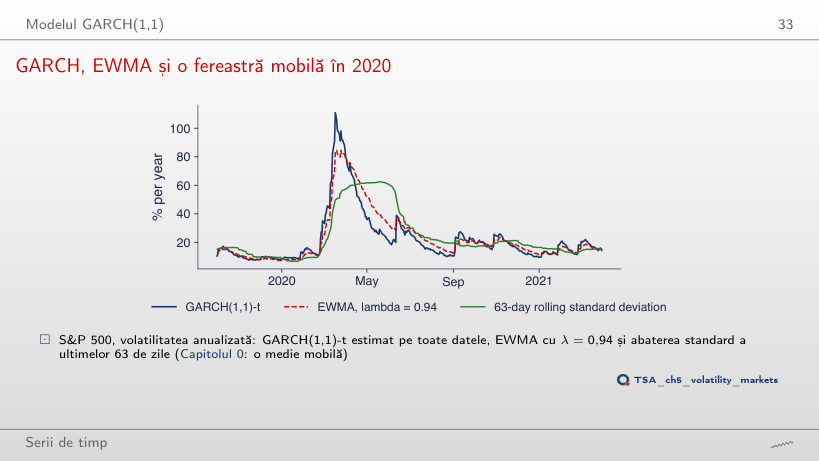
Răspuns
Mai mic: 67%, pe 27 martie 2020, față de 85% pe 25 martie pentru λ = 0,94. Cu λ mai mare, ponderea randamentului de ieri, 1 − λ, scade de la 0,06 la 0,03, iar timpul de înjumătățire al ponderilor crește de la 11,2 la 22,8 zile: estimarea reacționează mai încet și coboară mai încet (37% pe 30 iunie 2020, față de 30%). Cu λ = 0,90 vîrful este 103%, aproape de cel al GARCH (111%), al cărui α = 0,123 este mai mare decît 1 − λ = 0,06.
Estimarea prin verosimilitate maximă
Verosimilitatea modelului ARCH(1)
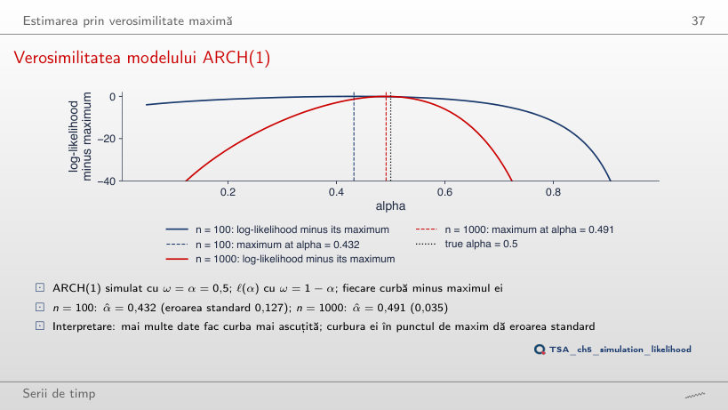
Răspuns
0,015 (α̂ = 0,516), față de 0,035 pentru n = 1000: de 2,3 ori mai mică, aproape de √5 = 2,24. Eroarea standard scade cu √n, pentru că log-verosimilitatea este o sumă de n termeni și curbura ei la maxim crește proporțional cu n.
Verosimilitatea modelului GARCH(1,1)
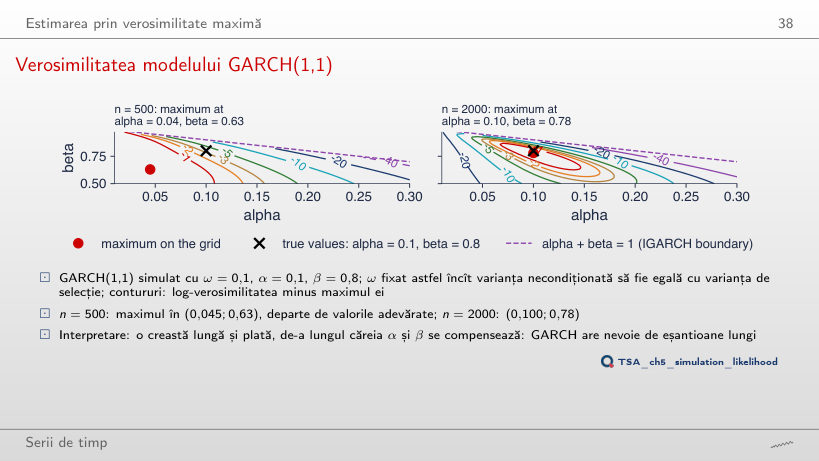
Răspuns
În (0,045; 0,90): α este tot subestimat și β supraestimat, de-a lungul aceleiași creste pe care α + β se schimbă puțin. Cu n = 1500 maximul este în (0,075; 0,82), cu n = 3000 în (0,10; 0,81), cu n = 5000 în (0,10; 0,82). Între α și β există un compromis: date diferite cu aceeași persistență dau aproape aceeași verosimilitate, de aceea GARCH cere eșantioane lungi.
Graficele QQ ale reziduurilor standardizate
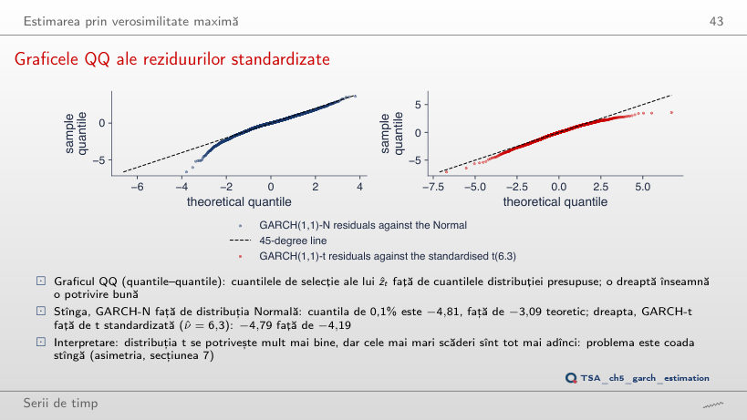
Răspuns
Pentru ν ≈ 4,5 (−4,79), mai mic decît ν̂ = 6,26. Dar distribuția t este simetrică: cu ν = 4,5 cuantila de 99,9% este +4,79, în timp ce cea de selecție este doar 2,93. Coada stîngă a reziduurilor este mai groasă decît cea dreaptă; o singură valoare ν nu le potrivește pe amîndouă, de aceea cursul compară și distribuția t asimetrică (skewed t).
GARCH pe patru piețe și modele ARMA-GARCH
Volatilitatea condiționată: S&P 500 și BET
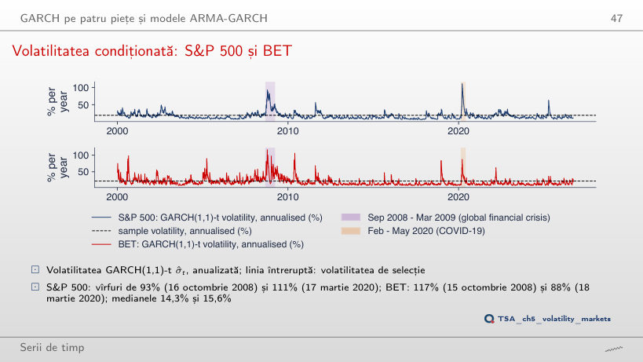
Răspuns
Vîrful crește de la 111% la 140%, iar mediana scade de la 14,3% la 13,3%: cu α = 0,245 și β = 0,750, volatilitatea reacționează mai puternic la fiecare șoc și revine mai repede. Pentru BET vîrful din 2008 crește de la 117% la 138%. Persistența, deci și nivelul pe termen lung, rămîne aceeași; se schimbă forma traiectoriei. Valorile estimate (c = 1) sînt cele care maximizează verosimilitatea.
Volatilitatea condiționată: EUR/RON și Bitcoin
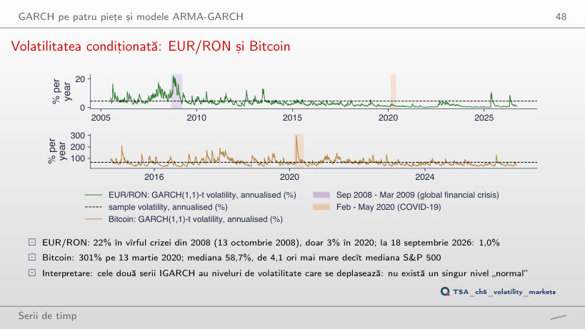
Răspuns
Da: 218%, față de 301% cu α estimat; mediana crește de la 58,7% la 66,6%. Și la un IGARCH, α decide cît de mult urcă volatilitatea după un șoc; α + β = 1 decide doar că șocul nu se stinge. Pentru EUR/RON, cu c = 0,5, vîrful din 2008 scade de la 22% la 19%.
Durata unui șoc de volatilitate
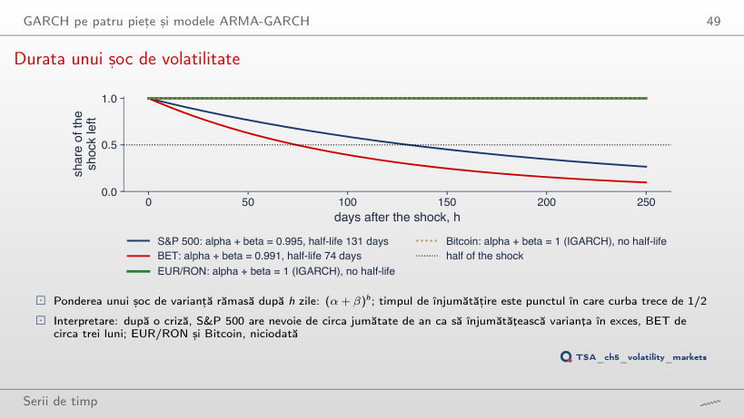
Răspuns
131: persistența estimată, nerotunjită, este 0,99471, iar ln 0,5 / ln 0,99471 = 130,7 zile. Rotunjirea la trei zecimale adaugă 7 zile; pentru BET, 0,99071 dă 74,3 zile, rotunjit la 0,991 dă 76,7. Rotunjit la 0,99, ambele dau 69,0 zile. Aproape de 1, timpul de înjumătățire depinde puternic de a treia zecimală: se calculează din valoarea nerotunjită.
Intervale de prognoză variabile în timp
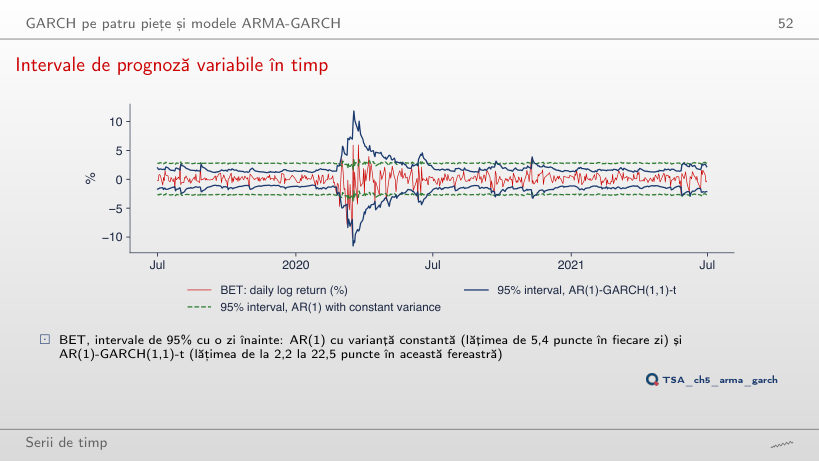
Răspuns
Intervalul constant ratează 28,6% din zile, intervalul GARCH 2,4%. Pe tot eșantionul: 2,9% și 1,0%, iar în 2017: 0,4% și 0,4%. Lățimea intervalului constant este 7,2 puncte în fiecare zi; a celui GARCH variază între 3,4 și 35,1 puncte în fereastra din grafic. Intervalul constant greșește tocmai în crize, cînd contează cel mai mult.
Asimetria și efectul de levier
Curbele de impact ale știrilor: S&P 500 și Bitcoin
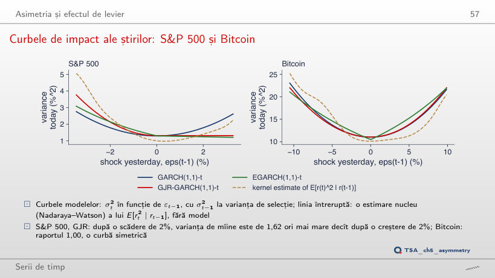
Răspuns
De 3,50 ori, față de 1,62 pentru un șoc de 2%. Raportul crește cu mărimea șocului: termenul γε² crește cu pătratul șocului, iar βσ² nu depinde de el. EGARCH dă 2,97; estimarea kernel doar 1,41, pentru că există puține zile cu scăderi de 4%. La Bitcoin raportul GJR rămîne aproape 1 (0,98).
Diagnosticare și alegerea modelului
Autocorelațiile eliminate de GARCH
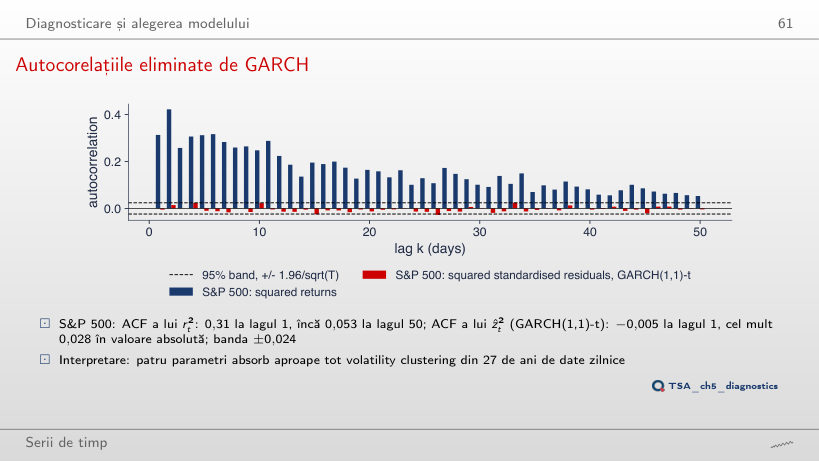
Răspuns
Nu. Valoarea vine dintr-o singură zi, 6 mai 2025, cu ẑ = 153,7, al cărei pătrat domină toate autocorelațiile. Fără această zi, Q(10) = 19,2 (p = 0,038): rămîn efecte ARCH, pe care testul cu toate zilele nu le separă de zgomot. Pentru S&P 500 excluderea celei mai mari |ẑ| (27 februarie 2007) schimbă puțin rezultatul (13,6 → 14,2).
Prognoza varianței și evaluarea ei
Structura la termen a volatilității
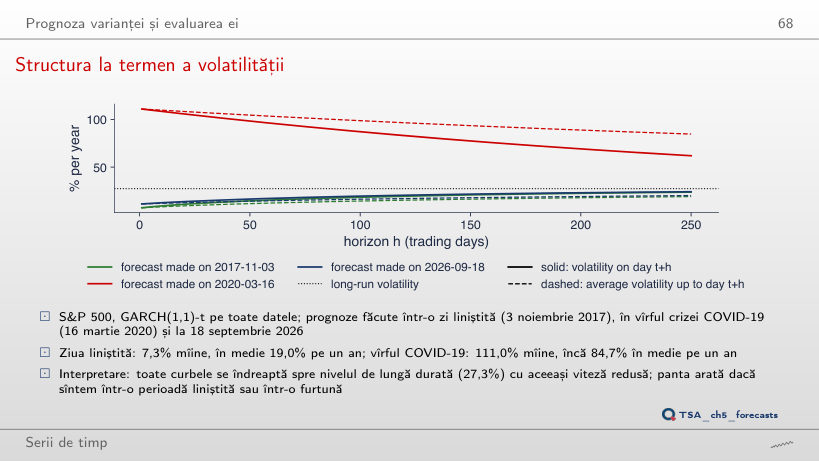
Răspuns
Mai mare: √(10 × 49,03) = 22,14% față de √479,49 = 21,90%. Pe 18 septembrie 2026 era invers: 2,26% față de 2,38%. Într-o criză varianța prognozată coboară spre nivelul pe termen lung, deci regula rădăcinii pătrate supraestimează; într-o perioadă calmă o subestimează.
GARCH față de EWMA, în afara eșantionului
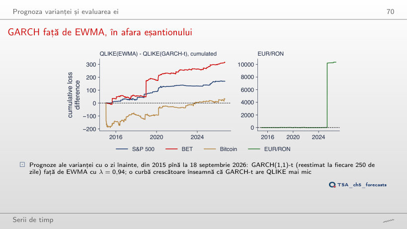
Răspuns
Nu: t = −1,32 (p = 0,187), față de −1,02 (p = 0,310) cu toate zilele. Ziua de 6 mai 2025 aducea 98% din diferența totală, iar fără ea mediile QLIKE ale celor două modele sînt apropiate. Pentru BET, fără 19 decembrie 2018 avantajul GARCH-t devine mai clar (t = −2,79, p = 0,005).
O aplicație: VaR 1% dintr-un model GARCH
VaR 1% în timpul crahului COVID-19
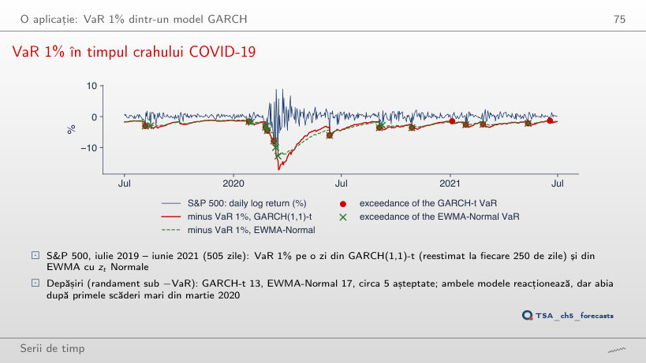
Răspuns
Nu: EWMA-Normal are 28, GARCH-t 32, față de 25,3 așteptate. Cuantila de 5% a distribuției t standardizate cu ν = 6,26 este −1,59, mai aproape de zero decît −1,645 a distribuției Normale: cozile groase cer cuantile mai mari doar departe în coadă. La VaR 1%: 13 depășiri GARCH-t și 17 EWMA-Normal (5 așteptate); la 0,5%: 7 și 16.
Randamente logaritmice zilnice, în %, pînă la 18 septembrie 2026: S&P 500, BET și Bitcoin din datele de piață ale cursului (EODHD), EUR/RON din cursul de referință al BNR. Estimările GARCH, GJR și EGARCH sînt cele din curs; volatilitățile condiționate se recalculează în browser din parametrii estimați. Variantele cu alți parametri decît cei estimați (α, β, λ, nivelul VaR, acoperirea intervalelor) folosesc parametri fixați, fără reestimare. Seriile simulate folosesc extragerile Normale ale seminței capitolului; variantele care nu apar în curs (alte valori ale lui α, β sau n) sînt rulări suplimentare ale codului capitolului, cu aceeași sămînță.